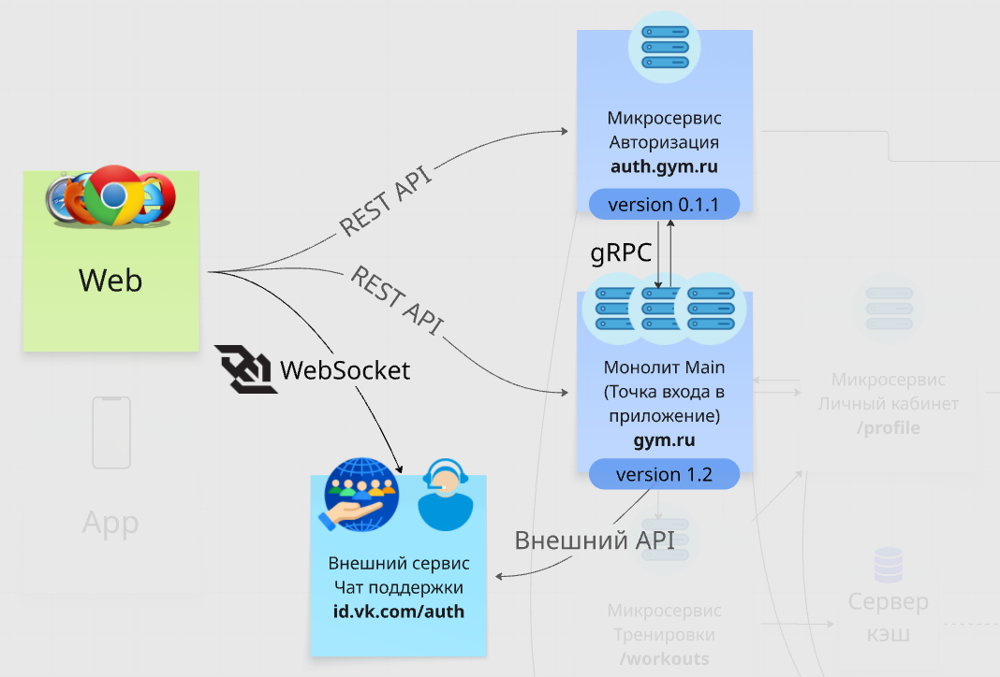

В этом уроке продолжим изучение типов общения. Возвращайся к видео и досматривай до конца (в GraphQL не углубляйся, достаточно поверхностного понимания, это почти никогда не спрашивают и не нужно).
Вебсокет — технология на отдельном протоколе (WSS), позволяющая вести непрерывное общение клиента и сервера (вместо стандартного HTTP общения «запрос-ответ»).
Что важно знать:
wss://Почитай дополнительно про работу вебсокетов:
user, ws_visitor_id, msgmsgversion, echo,test message timer,timer, инициирован пинг на клиент раз в секунду (каждую секунду приходит сообщение с сервера)version,Ну а топ самых популярных способов общения компонентов друг с другом закрывают такая технология, как RPC, и построенный на основе нее гугловский фреймворк gRPC.
RPC — протокол, технология вызова функций, используется для общения между бэкенд сервисами (микросервисами). Вместо привычного реста использует обращения непосредственно к функциям микросервисов, а не передает значения парами ключ:значение.
gRPC — по сути модернизированный гуглом ускоренный RPC, использует Protobuf (Protocol Buffers) вместо JSON, HTTP/2 вместо HTTP/1.
Спрашивают об этом нечасто, но если знаешь и можешь рассказать, а позже внедрить в свою легенду — это покажет тебя синьором на собесе. Часто используется в продвинутых архитектурах, например, банках. Однажды я завалил собес в иностранный банк из-за незнания gRPC, у них все микросервисы были подвязаны ей — лишил себя оффера на 300к+ :D
Кодинг и анализ трафика в Wireshark можешь пропустить в видео, главное внимательно посмотри работу в Postman.
